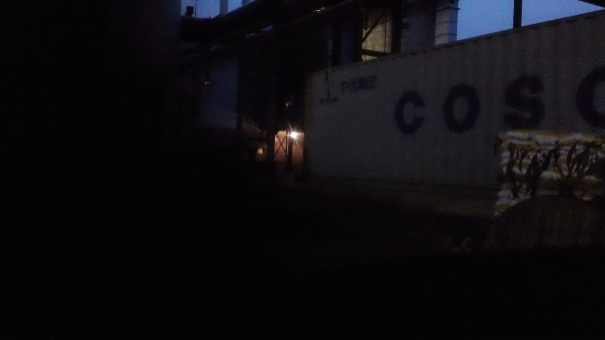

home
sooooooooo today was a mess. its okay though it happens sometimes...
I didnt sleep at all last night so i as up all night just rummaging and working on this website.
I think i have a dr appointment therapyt later this week.
Here are some photos I took from this mornings walk when I got tired of being inside:


I still dont know how long im going to be able to do this
Im also not sure if i like this current styling and i wonder how long it will take me to get to the place I want to be.
I also wonder what that will look like. Will I get used to writing all my journals in an IDE?
Whateva